GALAXIANの謎
謎と言いつつ、三番煎じな話です。
GALAXIANを含む初期のナムコの作品の中には機種によって動かないバージョンがあります。
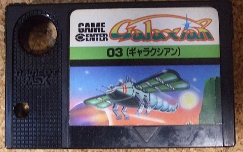
その原因は、すでにTINY野郎様のサイトで説明されているように、スタックポインタの初期値を0000hにしているためと判明しています。
近年、ツイッターで増設メモリカートリッジをスロットに挿すと動作するケースがあることが分かり、ちょっと話題になりました。しかしながら、そのメカニズムについて理解できなかったので、今回三番煎じになりますが、調査し記事化するものです。
・動作しない原因
スタックポインタの初期値が0000hになっている。このため、PUSH命令が発生するとFFFFhに値を書き込む。FFFFh、つまりPage3には通常RAMが割り当てられています。このRAMが基本スロットにあれば問題ないのですが、拡張スロットの場合、FFFFhにはRAMではなく拡張スロット選択レジスタが割り当てられています。そのためFFFFhに値を書き込んだ途端にスロットの構成がおかしくなり正常に動作しなくなります。
・解決方法
スタックポインタの初期値を変更する必要があり、その方法についてはTINY野郎さんのサイトで説明されている通りです。
近年、イノウマ様が発見し、X（旧ツイッター）で報告されたのは64kBの外部RAMカートリッジをスロット#2に挿したら動くようになった、というものです。しかしながら64kBの外部RAMカートリッジでなぜ動くようになったのか理解できず調査することとなりました。
結論を先に書きますと、GALAXIANを動かすためには一番若いスロットにあるPage3のメモリが基本スロットにあること、でした。ただし、turboRはプライマリメモリが固定スロットなので除きます。
現象自体はBlueMSXでも簡単に再現できます。といっても [MSX2] や [MSX2+] のデフォルト設定だと外部スロットが#1と#2-0になっていたりしてやりにくいので、ここではA1WXのROMを入れた状態で再現させています。A1WXのデフォルト設定では、外部スロットが#1と#2、メモリが#3-0にあります。
Step 1: スロット#1にGALAXIANをセット
これで起動しようとしても起動しません。
ここで、
Step 2: スロット#2に [特殊カートリッジ] - [外部RAMカートリッジ] - [64 kB] をセット
これで起動するようになります。
この現象に対して、「最も大きいメモリが接続されているメモリマッパがプライマリメモリとして選択されるので、64kBの増設メモリを本体内蔵メモリ（64kB想定）より若い番号の基本スロット挿せば、増設メモリがプライマリメモリになり起動するようになる」という説がありました。一見、この説は正しいように見えます。しかし、この説が正しい場合、本体の内蔵メモリを256kB等にすると増設メモリはプライマリメモリにならず、起動しなくなるはずです。
Step 3: [ツール] - [マシン構成編集] - [メモリ] で [3-0 0000-FFFF 64kB Mapped RAM] をダブルクリックし、[256kB] に設定する。
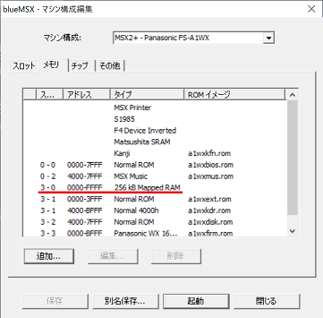
これでプライマリメモリが#3-0（拡張スロット）の内蔵メモリになるなら、FFFFhに拡張スロット選択レジスタがあるのでGALAXIANが起動しなくなるはず。しかし、実際に動作させてみると問題なく起動します。
何故このようなことが起こるかというと・・・「最も大きいメモリが接続されているメモリマッパがプライマリマッパとして選択される」のはMSX-DOS2の仕様（MSX turboRを除く）だということです。MSX-DOS2が存在しない環境では起動時にPage2とPage3のRAMを検索し、各PageにあるRAMのうち一番若いスロットをプライマリメモリに割り当てていることがにがさんの解析（起動シークエンス部）で分かっています。試しにスロット選択レジスタを読んでみますと・・・
Step 4: スロット#1のGALAXIANを取り出して再起動（BASIC起動）
BASIC画面で下記を実行（スロット選択レジスタの読み込み）
10 A=INP(&HA8)
20 A$="00000000"+BIN$(A)
30 PRINT RIGHT$(A$,8)
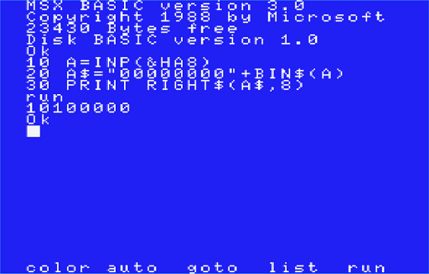
最初の"10"がPage3のスロット番号、次の"10"がPage2のスロット番号でどちらも256kBメモリのあるスロット#3ではなく、スロット#2を示しています。では、MSX-DOS2があるとどうなるかを見てみます。
Step 5: [ツール] - [マシン構成編集] - [メモリ] - [追加] でスロット#1にRAM無し版MSX-DOS2のイメージをタイプ [ASCII 16] でセットして再起動（BASIC起動）
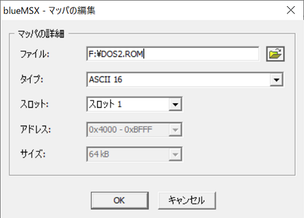
BASIC画面で下記を実行（スロット選択レジスタの読み込み）
10 A=INP(&HA8)
20 A$="00000000"+BIN$(A)
30 PRINT RIGHT$(A$,8)
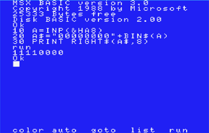
今度は最初が"11"、次も"11"でPage3, Page2ともにスロット#3が選ばれていることが分かります。つまり、「最も大きいメモリが接続されているメモリマッパがプライマリマッパとして選択される」のはMSX-DOS2の仕様であり、MSX-DOS2がない環境であれば、Page3, Page2の一番若いスロットのメモリがプライマリになることが分かりました。そのため、GALAXIANを動かすための条件も「一番若いスロットにあるPage3のメモリが基本スロットにあること」になります。
ちなみにGALAXIANが起動する構成になっているときに、追加で空きスロットにMSX-DOS2をセットすると（当然ながら？）プライマリメモリが#3-0になってしまうのでGALAXIANが起動しなくなります。
・おまけ１
Step 3で [64 kB] の外部RAMカートリッジを選んでいるのは、[16 kB] はPage2用, [32 kB] はPage0-1用, [48 kB] はPage2用の増設メモリなのでPage3のメモリにならないからです。 [64 kB] はPage0-3用になります。本体にはメモリが最低でもPage3に搭載されているので、外部RAMカートリッジとしてはPage3用に作る意味があまりないためです。念のためPage3にだけRAMを置いて確認してみます。
Step 6: スロット#1にGALAXIANをセット
Step 7: スロット#2の [64 kB] の外部RAMカートリッジを取り外す
Step 8: [ツール] - [マシン構成編集] - [メモリ] で先ほどスロット#1に追加したMSX-DOS2を削除
Step 9: [ツール] - [マシン構成編集] - [メモリ] - [追加] でスロット#2に [Normal RAM] をサイズ [16 kB] で追加
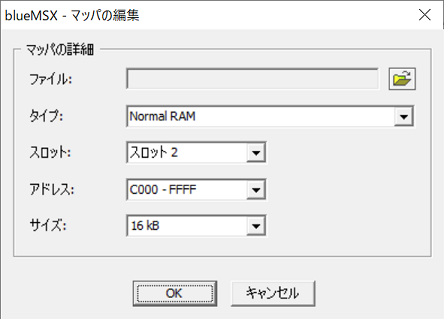
[マシン構成編集] は本体の構成なのでここで設定するRAMは内蔵RAMでPage3に設定されます。この設定でもGALAXIANが起動しますので、Page3のプライマリRAMが基本スロットであればよく、準備するのは16kBのメモリでも良いということになります。外部RAMカートリッジでPage3にメモリが載っているのは、結局64kB以上の外部RAMカートリッジ（メモリマッパ含む）ということになりますが。
ついでに・・・「プライマリメモリが基本スロットにあれば、FFFFhの拡張スロットレジスタが破壊されても問題ない」という話もありましたが、正しくは「Page3に割り当てられているスロットが基本スロットの場合、FFFFhに拡張スロット選択レジスタが存在しないので問題ない」ということになるかと思います。拡張スロット選択レジスタは各基本スロット毎に、スロットが拡張されている場合にのみ存在し、Page3に当該スロットが割り当てられない限り、拡張スロット選択レジスタは表に出てきません。
Step10: スロット#1のGALAXIANを取り出して再起動（BASIC起動）
BASIC画面で下記を実行（FFFFh=拡張スロット選択レジスタ?の書き込み＆読み込み）
10 POKE 65535,0
20 PRITN PEEK(65535)
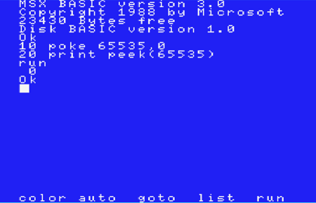
この状態（Page3がStep 9で設定したスロット#2）では、FFFFh=65535に書いた値がそのまま読めており、拡張スロット選択レジスタがないことが分かります。次にスロット#2のメモリをなくし、プライマリメモリを#3-0にしてみます。
Step11: [ツール] - [マシン構成編集] - [メモリ] でスロット#2の [2 C000-FFFF 16 kB Normal RAM] を削除して再起動（BASIC起動）
BASIC画面で下記を実行（FFFFh=拡張スロット選択レジスタの書き込み＆読み込み）
10 POKE 65535,0
20 PRITN PEEK(65535)
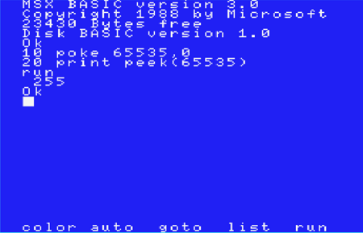
今度は書かれた値が反転して読めていますので、拡張スロット選択レジスタがあることが分かります。
・おまけ２
この実験のために私が購入したGALAXIANは後期版だったようで、スタックポインタの初期値がFFFFhでした。
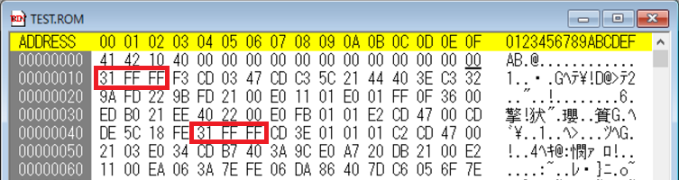
裏面を見てみると、古い住所（蒲田）でしたので、新しい住所のGALAXIANであれば問題が修正されている可能性がかなり高いと思われます。
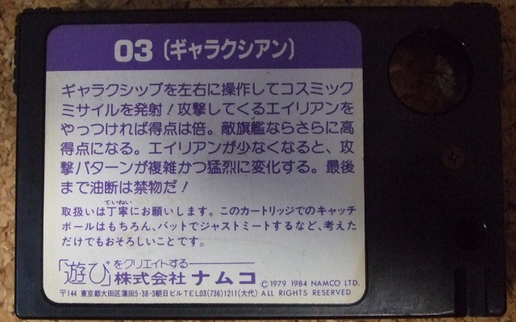
・おまけ３
64kB以上の外部RAMカートリッジ（メモリマッパ含む）というのもなかなか入手しづらいので、比較的安価な16kBの外部RAMカートリッジを改造してなんとかできないかを検討してみました。
一番簡単なのはCASIOのOR-216です。
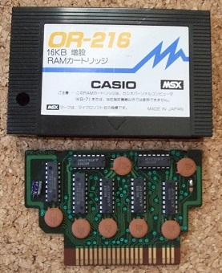
回路を見てみると・・・
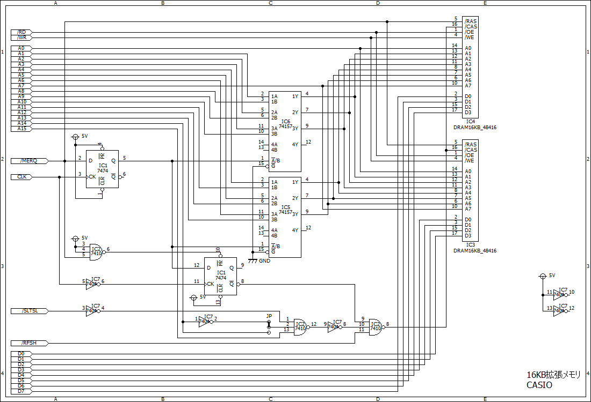
A15とA14でPageが決まるので、見るポイントはそこです。16kBの外部RAMカートリッジはPage2用なので、A15, A14が1,0の時に動作するような回路になっているはずです。
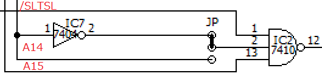
IC2の3入力NANDゲートに"/SLTSL"と"A14の反転"と"A15"が入っており、"A14の反転"の代わりに"A14"が入るようにすれば良いことが分かります。基板には半田でジャンパしている所があり、そこを切り替えれば簡単にPage3に16kBのRAMを配置する改造ができます。
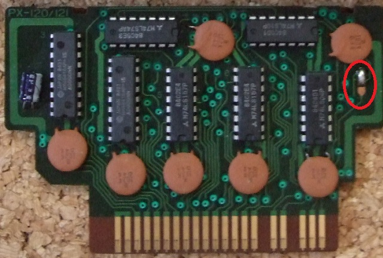
あとはどれも同じくらいの難易度になりますが、次はNATIONALのCF2131。
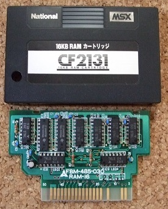
回路を見てみると・・・
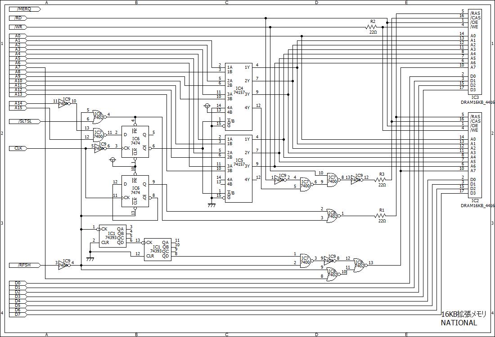
同様にA15とA14を確認すると、IC7のNANDゲートに"A14の反転"と"A15"が入っていることが分かります。
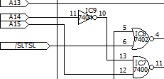
IC9の出力10ピンをカットし、ICの11ピンとIC7の13ピンをつなげればPage3に16kBのRAMを配置する改造ができます。
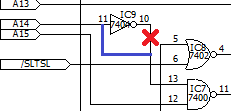
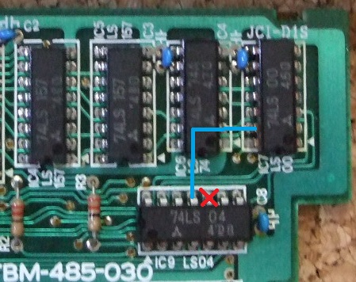
次はSONYのHBM-16。
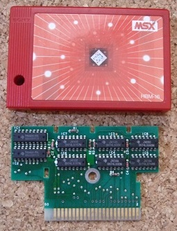
回路を見てみると
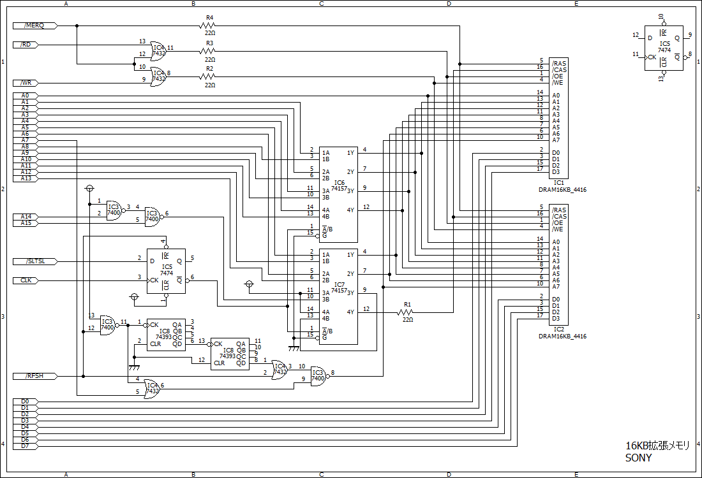
同様にA15とA14を確認すると、IC3のNANDゲートに"A14の反転"と"A15"が入っていることが分かります。
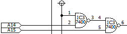
同じIC3のNANDゲートを使ってA14を反転しているので、IC3の出力3ピンをカットし、IC3の2ピンと4ピンをつなげればPage3に16kBのRAMを配置する改造ができます。
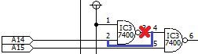
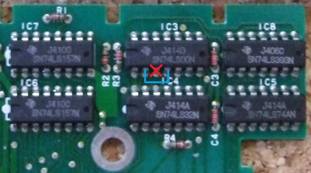
最後はAddcomのADMSM301。
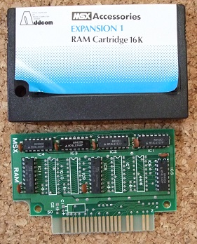
16-48kBまで対応していますが、当然ながらPage3には対応していません。実際にRAMが乗っているのはIC8とIC11です。
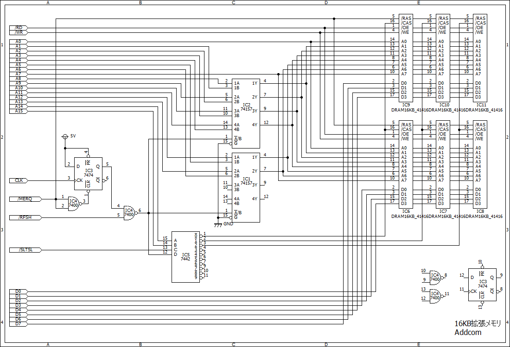
同様にA15とA14を確認すると、IC5のDECODERでPage0-2の信号を作っていることが分かります。
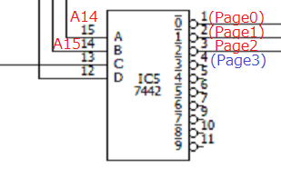
IC5ではPage3用の信号も出力されるので、Page2用の3ピン出力の代わりにPage3用の4ピン出力を使えばOKです。具体的にはIC5の3ピンをカットし、基板上でIC5の3ピンにつながっていたスルーホールとIC5の4ピンをつなげればPage3に16kBのRAMを配置する改造ができます。
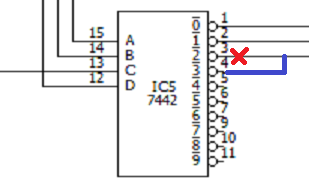
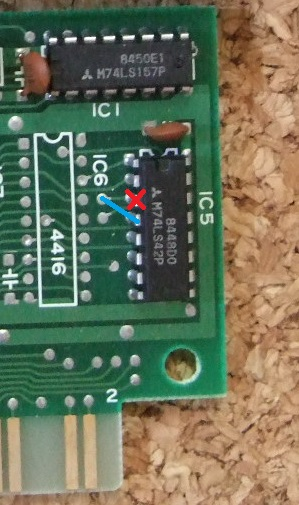
元ネタとして参考にさせて頂いたTINY野郎様、イノウマ様、解析に協力してくださったにがさんに感謝致します。
お約束ですが、この噂を見て改造などを行い故障やその他問題が発生しても責任は負えません。各自の責任において情報を広く集めて行うことをおすすめします。